컴퓨터활용능력-1급 (2016-06-25 기출문제)
1과목: 컴퓨터 일반
1. 다음 중 컴퓨터에서 사용하는 유니코드(Unicode)에 관한 설명으로 옳은 것은?
- 국제 표준으로 16비트의 만국 공통의 국제 문자 부호 체제이다.
- 6비트로 구성되어 있으며, 대소문자를 구별할 수 없다.
- 미국 표준국에서 통신을 위해 최근에 개발된 7비트 문자 부호 체제이다.
- 대형 컴퓨터에서 주로 사용하며 BCD 코드에서 확장된 8비트 체제이다.
(정답률: 89%)

2. 다음 중 USB 규격의 버전별 최대 데이터 전송 속도로 옳지 않은 것은?
- USB 1.1 : 12Mbps
- USB 2.0 : 480Mbps
- USB 3.0 : 1Gbps
- USB 3.1 : 10Gbps
(정답률: 77%)
3. 다음 중 컴퓨터에서 사용하는 모니터에 관한 설명으로 옳지 않은 것은?
- 모니터 해상도는 픽셀(Pixel) 수에 따라 결정된다.
- 모니터 크기는 화면의 가로와 세로 길이를 더한 값이다.
- 재생률(Refresh Rate)이 높을수록 모니터의 깜박임이 줄어든다.
- 플리커프리(Flicker free)가 적용된 모니터의 경우 눈의 피로를 줄일 수 있다.
(정답률: 84%)
4. 다음 중 컴퓨터 주기억장치로 사용되는 SRAM과 DRAM에 관한 설명으로 옳지 않은 것은?
- SRAM은 주로 콘덴서로 구성되며, 재충전이 필요하다.
- SRAM은 DRAM 보다 전력 소모가 많으나, 접근 속도가 빠르다.
- DRAM은 SRAM 보다 집적도가 높아 일반적인 주기억장치로 사용된다.
- SRAM은 전원이 공급되는 동안에는 기억 내용이 유지된다.
(정답률: 69%)
5. 다음 중 Windows 7의 [Windows 작업 관리자]에서 실행 가능한 작업으로 옳지 않은 것은?(윈도우 10 검증 완료)
- 네트워크에 연결되어 있는 경우 네트워크의 작동 상태를 확인하고 수정할 수 있다.
- 실행 중인 응용 프로그램이나 프로세스에 대한 정보를 확인할 수 있다.
- 둘 이상의 사용자가 컴퓨터에 연결되어 있는 경우 연결된 사용자 및 작업 상황을 확인하고 사용자에게 메시지를 보낼 수 있다.
- 컴퓨터에서 사용되고 있는 메모리 및 CPU 리소스의 양에 대한 자세한 정보를 볼 수 있다.
(정답률: 48%)
6. 다음 중 컴퓨터에서 사용하는 기억장치에 관한 설명으로 옳지 않은 것은?
- 플래시(Flash) 메모리는 비휘발성 기억장치로 주로 디지털 카메라나 MP3, 개인용 정보 단말기, USB 드라이브 등 휴대형 기기에서 대용량 정보를 저장하는 용도로 사용된다.
- 하드디스크 인터페이스 방식은 EIDE, SATA, SCSI 방식 등이 있다.
- 캐시(Cache) 메모리는 CPU와 주기억장치 사이에 위치하여 두 장치간의 속도 차이를 줄여 컴퓨터의 처리속도를 빠르게 하기 위한 메모리이다.
- 연관(Associative) 메모리는 보조기억장치를 마치 주기억장치와 같이 사용하여 실제 주기억 장치 용량 보다 기억용량을 확대하여 사용하는 방법이다.
(정답률: 86%)
7. 다음 중 Windows 7의 고급 부팅 옵션 화면에서 ‘시스템 복구’를 선택한 경우 표시되는 [시스템 복구 옵션] 대화상자의 복구 도구에 대한 설명으로 옳지 않은 것은?(윈도우 10과 완전 일치 하지는 않음)
- ‘시동 복구’ 도구는 시스템 파일 누락이나 손상과 같은 특정 문제만 해결할 수 있다.
- ‘시스템 복원’ 도구는 문서, 사진 등의 사용자 데이터와 프로그램을 포함하는 시스템 이미지를 사전에 만든 후에 이를 복원한다.
- ‘Windows 메모리 진단’ 도구는 컴퓨터의 메모리 하드웨어 오류가 있는지 확인한다.
- ‘명령 프롬프트’ 도구는 복구 관련 작업을 수행할 수 있으며, 문제 진단 및 해결을 위해 다른 명령줄 도구를 실행할 수도 있다.
(정답률: 51%)
8. 다음 중 Windows 7에서 홈 그룹 설정에 대한 설명으로 옳지 않은 것은?(윈도우 10 검증 완료)
- 홈 그룹은 홈 네트워크에서만 사용할 수 있다.
- 홈 그룹에 참여하면 Guest 계정을 제외한 내 컴퓨터의 모든 계정이 홈 그룹의 구성원이 된다.
- 모든 사람이 홈 그룹을 나가도 홈 그룹은 존재한다.
- 자동으로 공유되지 않는 파일과 폴더는 공유 대상 메뉴를 사용하여 개별 파일과 폴더를 선택하고 다른 사용자와 공유할 수 있다.
(정답률: 72%)
9. 다음 중 컴퓨터 변경 내용에 대한 알림 조건을 선택할 수 있는 사용자 계정 컨트롤(UAC) 설정에 대한 설명으로 옳지 않은 것은?
- 유해한 프로그램이나 불법 사용자가 컴퓨터 설정을 임의로 변경하지 못하도록 제어하는 기능이다.
- Guest 계정에서는 [사용자 계정 컨트롤 설정] 창에서 관리자 계정의 암호를 입력해야 UAC의 알림 빈도를 제어할 수 있다.
- UAC를 ‘항상 알림’으로 설정하는 것이 가장 안전한 설정이며, 프로그램에서 관리자 수준 권한이 필요한 컴퓨터 변경 작업을 수행하거나 사용자가 직접 Windows 설정을 변경할 때 알림이 표시된다.
- UAC를 기본값으로 설정하는 경우 프로그램에서 사용자 모르게 컴퓨터를 변경하려는 경우에만 알림이 표시되며, 사용자가 직접 Windows 설정을 변경하는 경우에는 알림이 표시되지 않는다.
(정답률: 61%)
10. 다음 중 CMOS와 BIOS에 대한 설명으로 옳지 않은 것은?
- 일반적으로 부팅시 <Delete>키 또는 <F2>키 등을 눌러 CMOS 셋업 프로그램을 실행할 수 있다.
- BIOS는 POST, 시스템 초기화, 시스템 부트 등을 수행하는 제어 프로그램이다.
- BIOS는 CMOS에 저장되어 있다.
- CMOS는 부팅시에 필요한 하드웨어 정보를 담고 있는 반도체이다.
(정답률: 67%)
11. 다음 중 게시판 입력, 상품 검색, 회원 가입 등과 같은 데이터베이스 처리 작업을 수행하기 위해 사용하며, 웹 서버에서 작동하는 스크립트 언어들로만 모아 놓은 것은?
- HTML, XML, SGML
- Java, Java Applet, Java Script
- Java Script, VB Script,
- ASP, JSP, PHP
(정답률: 75%)
12. 다음 중 아래의 설명에 해당하는 Windows 제공 기능은?(윈도우 10 검증 완료)
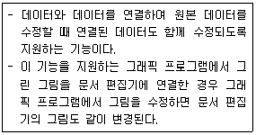
- 선점형 멀티태스크(Preemptive Multitasking)
- GUI(Graphic User Interface)
- PnP(Plug & Play)
- OLE(Object Linking and Embedding)
(정답률: 87%)
13. 다음 중 인터넷에서 사용하는 IPv6에 관한 설명으로 옳지 않은 것은?
- IPv4와의 호환성이 우수하다.
- 128비트의 주소를 사용하며, 주소의 각 부분은.(Period)로 구분한다.
- 실시간 흐름제어로 향상된 멀티미디어 기능을 지원한다.
- 인증성, 기밀성, 데이터 무결성의 지원으로 보안문제를 해결할 수 있다.
(정답률: 83%)
14. 다음 중 디지털 데이터 신호를 변조하지 않고 원래의 신호를 그대로 직접 전송하는 방식으로 LAN과 같은 근거리통신망에 사용되는 것은?
- 단방향 전송
- 반이중 전송
- 베이스밴드 전송
- 브로드밴드 전송
(정답률: 62%)
15. 다음 중 네트워크와 관련하여 Ping 서비스에 대한 설명으로 옳은 것은?
- 인터넷의 기원, 구성, 사용 가능한 인터넷 서비스 등 기초적인 정보를 제공하는 서비스이다.
- 웹 브라우저와 웹 서버 사이의 정보 전달을 위한 인터페이스를 제공해 주는 서비스이다.
- DNS가 가지고 있는 특정 도메인의 IP 주소를 검색해 주는 서비스이다.
- 지정된 호스트에 대해 네트워크층의 통신이 가능한지의 여부를 확인하는 서비스이다.
(정답률: 69%)
16. 다음 중 음성 또는 영상의 아날로그 신호를 디지털 신호로 변환하거나 그 반대로 디지털 신호를 아날로그 신호로 변환하는 장치는?
- 허브(HUB)
- 디지털 서비스 유니트(DSU)
- 코덱(CODEC)
- 통신제어장치(CCU)
(정답률: 77%)
17. 다음 중 인터넷 상의 보안을 위협하는 행위에 대한 설명으로 옳은 것은?
- 어떤 프로그램이 정상적으로 실행되는 것처럼 속임수를 사용하는 것은 Sniffing이다.
- 네트워크 주변을 지나다니는 패킷을 엿보면서 아이디와 패스워드를 알아내는 것은 Spoofing이다.
- 크래킹의 도구로 키보드의 입력을 문서 파일로 저장 하거나 주기적으로 전송하여 ID나 암호 등의 개인 정보를 빼내는 것은 Key Logger이다.
- 특정 사이트에 오버플로우를 일으켜서 시스템이 서비스를 거부하도록 만드는 것은 Trap Door이다.
(정답률: 83%)
18. 다음 중 컴퓨터 통신에서 사용하는 프록시(Proxy) 서버의 기능으로 옳은 것은?
- 방화벽 기능과 캐시 기능
- 웹 서비스와 IP 주소 확인 기능
- 팝업 차단과 방문한 웹 주소 기억 기능
- 서버 인증과 바이러스 차단 기능
(정답률: 85%)
19. 다음 중 멀티미디어에 대한 설명으로 옳지 않은 것은?
- 멀티미디어와 관련된 표준안은 그래픽, 오디오, 문서 등 매우 다양하다.
- 대표적인 정지화상 표준으로는 손실, 무손실 압축 기법을 다 사용할 수 있는 JPEG과 무손실 압축 기법을 사용하는 GIF가 있다.
- 국제 표준 규격인 MPEG은 Windows 표준 동영상 파일 형식으로 Windows에서 별도의 하드웨어 장치 없이 재생할 수 있다.
- 스트리밍이 지원되는 파일 형식은 ASF, WMV, RAM 등이 있다.
(정답률: 67%)
20. 다음 중 멀티미디어 그래픽과 관련하여 이미지 표현 방식에 관한 설명으로 옳지 않은 것은?
- 비트맵 방식은 이미지를 모니터 화면에 표시하는 속도가 벡터 방식에 비해 빠르다.
- 비트맵 방식은 다양한 색상을 사용하므로 사진과 같은 사실적 표현이 가능하고 여러 가지 특수효과를 쉽게 줄 수 있다.
- 벡터 방식은 점, 직선, 도형 정보를 사용하여 수학적인 계산에 의해 이미지를 표현한다.
- 벡터 방식의 대표적인 프로그램의 종류는 포토샵, 일러스트레이터, 플래시 등이 있다.
(정답률: 74%)
2과목: 스프레드시트 일반
21. 다음 중 피벗 테이블과 피벗 차트에 대한 설명으로 옳지 않은 것은?
- 새 워크시트에 피벗 테이블을 생성하면 보고서 필터의 위치는 [A1] 셀, 행 레이블은 [A3] 셀에서 시작한다.
- 피벗 테이블과 연결된 피벗 차트가 있는 경우 피벗 테이블에서 [모두 지우기] 명령을 사용하면 피벗 테이블과 피벗 차트의 필드, 서식 및 필터가 제거된다.
- 하위 데이터 집합에도 필터와 정렬을 적용하여 원하는 정보만 강조할 수 있으나 조건부 서식은 적용되지 않는다.
- [피벗 테이블 옵션] 대화 상자에서 오류 값을 빈 셀로 표시하거나 빈 셀에 원하는 값을 지정하여 표시할 수도 있다.
(정답률: 69%)
22. 다음 중 자동 필터에 관한 설명으로 옳지 않은 것은?
- 날짜가 입력된 열에서 요일로 필터링하려면 ‘날짜 필터’ 목록에서 필터링 기준으로 사용할 요일을 하나 이상 선택 하거나 취소한다.
- 두 개 이상의 필드에 조건을 설정하는 경우 필드 간에는 AND 조건으로 결합되어 필터링된다.
- 열 머리글에 표시되는 드롭다운 화살표에는 해당 열에서 가장 많이 나타나는 데이터 형식에 해당하는 필터 목록이 표시된다.
- 자동 필터를 사용하면 목록 값, 서식 또는 조건 등 세가지 유형의 필터를 만들 수 있으며, 각 셀의 범위나 표 열에 대해 한 번에 한 가지 유형의 필터만 사용할 수 있다.
(정답률: 64%)
23. 다음 중 데이터 유효성 검사를 실행하기 위해 유효성 조건으로 설정할 수 있는 ‘제한 대상’에 대한 설명으로 옳지 않은 것은?
- 목록: 목록으로 정의한 항목으로 데이터 제한
- 정수: 지정된 범위를 벗어난 숫자 제한
- 데이터: 지정된 데이터 형식에 대한 제한
- 사용자 지정: 수식을 사용하여 허용되는 값 제한
(정답률: 53%)
24. 다음 중 외부 데이터 가져오기를 이용하여 데이터를 추출한 경우 연결된 데이터에 새로 고침을 실행하는 작업에 대한 설명으로 옳지 않은 것은?
- 통합 문서를 열 때 외부 데이터 범위를 자동으로 새로 고칠 수 있으며, 외부 데이터는 저장하지 않고 통합 문서를 저장하여 통합 문서 파일 크기를 줄일 수도 있다.
- 새로 고침 옵션에서 '다른 작업하면서 새로 고침'을 선택하여 OLAP쿼리를 백그라운드로 실행하면 쿼리가 실행되는 동안에도 Excel을 사용할 수 있다.
- 열려 있는 통합 문서가 여러 개이면 각 통합 문서에서 ‘모두 새로 고침’을 클릭하여 외부 데이터를 새로 고쳐야 한다.
- 일정한 간격으로 데이터 새로 고침을 자동 수행하도록 설정할 수 있으며, 수행 간격은 분 단위로 지정한다.
(정답률: 46%)
25. 다음 중 서식 코드를 셀의 사용자 지정 표시 형식으로 설정한 경우 입력 데이터와 표시 결과가 옳지 않은 것은?
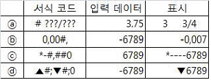
- ⓐ
- ⓑ
- ⓒ
- ⓓ
(정답률: 84%)
26. 다음 중 데이터 입력에 대한 설명으로 옳지 않은 것은?
- 고정 소수점이 포함된 숫자를 입력하려면 [Excel 옵션]의 [고급] 편집 옵션에서 ‘소수점 자동 삽입’ 확인란을 선택하고 소수점 위치를 설정한다.
- 셀에 입력하는 글자 중 처음 몇 자가 해당 열의 기존 내용과 일치하면 나머지 글자가 자동으로 입력되며, 텍스트나 텍스트/숫자 조합, 날짜가 입력되는 경우에만 자동으로 입력된다.
- 두 개 이상의 셀을 선택하고 채우기 핸들을 끌 때 <Ctrl>키를 누르고 있으면 자동 채우기 기능을 해제할 수 있다.
- 시간을 12시간제로 입력하려면 ‘9:00 pm’과 같이 시간 뒤에 공백을 입력하고 am 또는 pm을 입력한다.
(정답률: 55%)
27. 다음 중 아래와 같이 통합 문서 보호를 설정한 경우 이에 대한 설명으로 옳지 않은 것은?
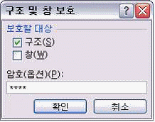
- 워크시트의 이동, 삭제, 숨기기, 워크시트의 이름 변경 등의 기능을 실행할 수 없다.
- 삽입되어 있는 차트를 다른 워크시트로 이동시킬 수 없다.
- 시나리오 요약 보고서를 만들 수 없다.
- 피벗 테이블 보고서에서 데이터 영역의 셀에 대한 원본 데이터를 표시하거나 별도 워크시트에 필드 페이지를 표시할 수 없다.
(정답률: 44%)
28. 다음 중 셀을 이동하거나 복사하는 과정에 대한 설명으로 옳지 않은 것은?
- 셀을 이동하거나 복사하면 수식과 결과값, 셀 서식 및 메모를 포함한 셀 전체가 이동되거나 복사된다.
- 선택 영역의 테두리를 클릭한 채 다른 위치로 드래그 하면 해당 영역이 이동된다.
- 선택한 복사 영역에 숨겨진 행이나 열이 있는 경우 숨겨진 영역도 함께 복사된다.
- <Ctrl>+<X>키를 이용하여 잘라내기 한 경우 [값 붙여넣기]를 실행할 수 있다.
(정답률: 55%)
29. 다음 중 아래의 워크시트에서 <보기>의 프로시저 실행 결과로 옳은 것은?
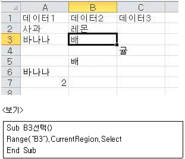
- [B3] 셀이 선택된다.
- [A1:B3] 셀이 선택된다.
- [A1:C3] 셀이 선택된다.
- [A1:C7] 셀이 선택된다.
(정답률: 53%)
30. 다음 중 아래의 서브 프로시저가 실행된 후 [A2] 셀의 값으로 옳은 것은?
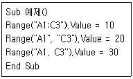
- 10
- 20
- 30
- 0
(정답률: 65%)
31. 다음 중 아래의 워크시트에서 수식의 결과로 ‘부사장’을 출력하지 않는 것은?
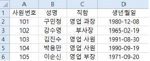
- =CHOOSE(CELL("row",B3), C2, C3, C4, C5, C6)
- =CHOOSE(TYPE(B4), C2, C3, C4, C5, C6)
- =OFFSET(A1:A6,2,2,1,1)
- =INDEX(A2:D6,MATCH(A3, A2:A6, 0), 3)
(정답률: 67%)
32. 다음 중 아래의 워크시트에서 [A4:B5] 영역을 선택한 후 수식 ‘=A1:B2+D1:E2’를 입력하고, <Ctrl>+<Shift>+<Enter>키를 눌렀을 때, [B5] 셀에 표시되는 값으로 옳은 것은?
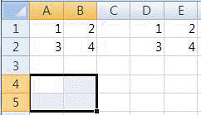
- 4
- 8
- 10
- 20
(정답률: 71%)
33. 다음 중 아래 시트에서 자격증 응시자에 대한 과목별 평균을 구하려고 할 때, [C11] 셀에 입력해야 할 배열 수식으로 옳은 것은?
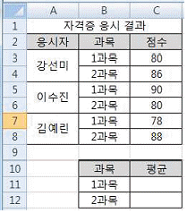
- {=AVERAGE(IF(MOD(ROW(C3:C8),2)=0,C3:C8))}
- {=AVERAGE(IF(MOD(ROW(C3:C8),2)=1,C3:C8))}
- {=AVERAGE(IF(MOD(ROWS(C3:C8),2)=0,C3:C8))}
- {=AVERAGE(IF(MOD(ROWS(C3:C8),2)=1,C3:C8))}
(정답률: 57%)
34. 다음 중 배열 수식 및 배열 함수에 대한 설명으로 옳지 않은 것은?
- 배열 수식에서 사용되는 배열 상수에는 숫자, 텍스트, TRUE나 FALSE 등의 논리값 또는 #N/A와 같은 오류 값이 포함될 수 있다.
- MDETERM 함수는 배열로 저장된 행렬에 대한 역행렬을 산출한다.
- PERCENTILE 함수는 범위에서 k번째 백분위수 값을 구하며, 이 때 k는 0에서 1까지 백분위수 값 범위이다.
- FREQUENCY 함수는 값의 범위 내에서 해당 값의 발생 빈도를 계산하여 세로 배열 형태로 나타낸다.
(정답률: 61%)
35. 다음 중 [틀 고정]에 대한 설명으로 옳지 않은 것은?
- 워크시트를 스크롤할 때 특정 행이나 열이 계속 표시 되도록 하는 기능이다.
- 워크시트의 화면상 첫 행이나 첫 열을 고정할 수 있으며, 선택한 셀의 위쪽 행과 왼쪽 열을 고정할 수도 있다.
- 표시되어 있는 틀 고정 선을 더블 클릭하여 틀 고정을 취소할 수 있다.
- 인쇄 시 화면에 표시되는 틀 고정의 형태는 적용되지 않는다.
(정답률: 66%)
36. 다음 중 엑셀에서 지원하는 파일 형식에 대한 설명으로 옳지 않은 것은?
- 통합 문서에 매크로나 VBA 코드가 없으면 ‘*.xlsx’ 파일 형식으로 저장한다.
- Excel 2003 파일을 Excel 2007에서 열어 작업할 경우 파일은 자동으로 Excel 2007 형식으로 저장된다.
- 통합 문서를 서식 파일로 사용하려면 ‘*.xltx’ 파일 형식으로 저장한다.
- 이전 버전의 Excel에서 만든 파일을 Excel 2007 파일로 저장하면 새로운 Excel 기능을 모두 사용할 수 있다.
(정답률: 56%)
37. 다음 중 아래 설명에 해당하는 차트 종류는?
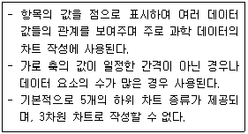
- 분산형 차트
- 도넛형 차트
- 방사형 차트
- 혼합형 차트
(정답률: 75%)
38. 다음 중 엑셀 차트의 추세선에 관한 설명으로 옳지 않은 것은?
- 추세선은 지수, 선형, 로그, 다항식, 거듭제곱, 이동평균 등 6가지의 종류가 있다.
- 하나의 데이터 계열에 두 개 이상의 추세선을 동시에 표시할 수는 없다.
- 추세선이 추가된 데이터 계열의 차트 종류를 3차원 차트로 변경하면 추세선은 자동으로 삭제된다.
- 추세선을 삭제하려면 차트에 표시된 추세선을 선택한 후 <Delete>키를 누르거나 추세선의 바로 가기 메뉴에서 [삭제]를 선택한다.
(정답률: 69%)
39. 다음 중 [보기]탭의 [페이지 나누기 미리보기]에 대한 설명으로 옳지 않은 것은?
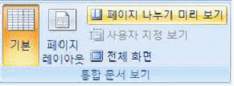
- 페이지 나누기는 구분선을 이용하여 인쇄를 위한 페이지 나누기를 빠르게 조정하는 기능이다.
- 행 높이와 열 너비를 변경하면 자동 페이지 나누기의 위치도 변경된다.
- [페이지 나누기 미리보기]에서 수동으로 삽입된 페이지 나누기는 파선으로 표시되고 자동으로 추가된 페이지 나누기는 실선으로 표시된다.
- 용지 크기, 여백 설정, 배율 옵션 등에 따라 자동 페이지 나누기가 삽입된다.
(정답률: 74%)
40. 다음 중 워크시트의 화면 [확대/축소]에 관한 설명으로 옳지 않은 것은?
- 여러 워크시트가 선택된 상태에서 확대/축소 배율을 변경하면 선택된 워크시트 모두 확대/축소 배율이 적용된다.
- [보기] 탭 [확대/축소] 그룹의 [선택 영역 확대/축소] 명령은 선택된 영역으로 전체 창을 채우도록 워크시트를 확대하거나 축소한다.
- 확대/축소 배율은 최소 10%, 최대 400%까지 설정할 수 있다.
- [확대/축소] 대화상자에서 지정한 배율은 인쇄 시 [페이지 설정]의 확대/축소 배율에 반영된다.
(정답률: 68%)
3과목: 데이터베이스 일반
41. 다음 중 아래의 매크로 함수에 대한 설명으로 옳은 것은?
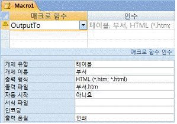
- 부서.htm 파일을 인쇄한 후 부서.htm 파일의 내용을 [부서] 테이블로 저장한다.
- HTML 문서인 부서.htm 파일을 읽어 [부서] 테이블로 가져오기 마법사를 실행한다.
- [부서] 테이블의 내용을 HTML 문서인 부서.htm 파일로 저장한다.
- [부서] 테이블의 형식을 HTML 형식으로 변경한 후 [부서] 테이블에 저장한다.
(정답률: 59%)
42. 다음 중 이름이 ‘txt제목’인 텍스트 상자 컨트롤에 ‘매출내역’ 이라는 내용을 입력하는 VBA 명령으로 옳지 않은 것은?
- txt제목 = “매출내역”
- txt제목.text = “매출내역”
- txt제목.value = “매출내역”
- txt제목.caption = “매출내역”
(정답률: 60%)
43. 다음 중 외래 키 값을 관련된 테이블의 기본 키 값과 동일하게 유지해 주는 제약 조건은?
- 동시제어성
- 관련성
- 참조무결성
- 동일성
(정답률: 79%)
44. 다음 중 실행 쿼리에 해당하지 않는 것은?
- 테이블 만들기 쿼리
- 추가 쿼리
- 업데이트 쿼리
- 선택 쿼리
(정답률: 60%)
45. 다음 중 데이터 보안 및 회복, 무결성, 병행 수행 제어 등을 정의하는 데이터베이스 언어로 데이터베이스 관리자가 데이터 관리를 목적으로 주로 사용하는 언어는?
- 데이터 제어어(DCL)
- 데이터 부속어(DSL)
- 데이터 정의어(DDL)
- 데이터 조작어(DML)
(정답률: 78%)
46. 다음 중 보고서의 각 구역에 대한 설명으로 옳지 않은 것은?
- 보고서 바닥글 영역에는 로고, 보고서 제목, 날짜 등을 삽입하며, 보고서의 모든 페이지에 출력된다.
- 페이지 머리글 영역에는 열 제목 등을 삽입하며, 모든 페이지의 맨 위에 출력된다.
- 그룹 머리글/바닥글 영역에는 일반적으로 그룹별 이름, 요약 정보 등을 삽입한다.
- 본문 영역은 실제 데이터가 레코드 단위로 반복 출력 되는 부분이다.
(정답률: 76%)
47. 다음 중 보고서의 그룹화 및 정렬에 대한 설명으로 옳지 않은 것은?
- ‘그룹’은 머리글과 같은 소계 및 요약 정보와 함께 표시되는 레코드의 모음으로 그룹 머리글, 세부 레코드 및 그룹 바닥글로 구성된다.
- 그룹화 할 필드가 날짜 데이터이면 실제 값(기본)·일·주·월·분기·연도를 기준으로, 문자 데이터이면 전체 필드(기본) 또는 처음 첫 자에서 다섯 자까지 문자 수를 기준으로 그룹화 할 수 있다.
- Sum 함수를 사용하는 계산 컨트롤을 그룹 머리글에 추가하면 현재 그룹에 대한 합계를 표시할 수 있다.
- 필드나 식을 기준으로 최대 5단계까지 그룹화 할 수 있으며, 같은 필드나 식은 한 번씩만 그룹화 할 수 있다.
(정답률: 76%)
48. 다음 중 보고서 작성 시 페이지 번호 출력을 위한 식과 그 결과의 연결이 옳지 않은 것은? (Page, Pages 변수값은 각각 20과 80으로 설정되었다고 가정한다.)
- 식: =[Page] : 결과값: 20
- 식: =[Page] & " Page" : 결과값: 20 Page
- 식: =Format([Page],"000") : 결과값: 020
- 식: =[Page/Pages] : 결과값: 20/80
(정답률: 58%)
49. 다음 중 레이블 보고서에 관한 설명으로 옳지 않은 것은?
- 레이블은 표준 레이블 또는 사용자 지정 레이블을 사용할 수 있다.
- 여러 개의 열로 이루어지고, 그룹 머리글과 그룹 바닥글, 세부 구역이 각 열마다 나타난다.
- 레이블 형식에서 낱장 용지와 연속 용지를 선택할 수 있다.
- 레이블에서 이름 필드의 값에 ‘귀하’를 붙여 출력하려면 ‘{이름}귀하’로 설정한다.
(정답률: 46%)
50. 다음 중 [관계 편집] 대화 상자에 대한 설명으로 옳지 않은 것은?
- 관계를 구성하는 어느 한 쪽의 테이블 또는 필드 및 쿼리를 변경할 수 있다.
- 조인 유형을 내부 조인, 왼쪽 우선 외부 조인, 오른쪽 우선 외부 조인 중에서 선택할 수 있다.
- ‘항상 참조 무결성 유지’를 선택한 경우 ‘관련 필드 모두 업데이트’와 ‘관련 레코드 모두 삭제’ 옵션을 선택할 수 있다.
- 관계의 종류를 일대다, 다대다, 일대일 중에서 선택할 수 있다.
(정답률: 68%)
51. '갑' 테이블의 속성 A가 1, 2, 3, 4, 5의 도메인을 가지고 있고, '을' 테이블의 속성 A가 0, 2, 3, 4, 6의 도메인을 가지고 있다고 가정할 때 다음 SQL구문의 실행 결과는?
- 2, 3, 4
- 0, 1, 2, 3, 4, 5, 6
- 1, 5, 6
- 0
(정답률: 69%)
52. 다음 중 SQL의 SELECT문에 대한 설명으로 옳지 않은 것은?
- ORDER BY문을 이용하여 정렬할 때, 기본 값은 오름차순 정렬(ASC) 값을 가진다.
- 검색 필드의 구분은 콤마(,)로 구분한다.
- 검색 결과에 중복되는 레코드를 없애기 위해서는 'DISTINCT'를 명세해야한다.
- FROM 절에는 테이블 이름만을 지정할 수 있다.
(정답률: 51%)
53. 다음 중 필드 속성에 대한 설명으로 옳지 않은 것은?
- 입력 마스크는 텍스트, 숫자, 날짜/시간, 통화 형식에서 사용할 수 있다.
- 필드 값이 반드시 있어야 하는 경우, 필수 속성을 ‘예’로 설정하면 된다.
- ‘예/아니오’의 세부 형식은 ‘Yes/No’와 ‘True/False’ 두 가지만을 제공한다.
- 텍스트, 숫자, 일련 번호 형식에서만 필드 크기를 지정 할 수 있다.
(정답률: 67%)
54. 다음 중 조회 속성에서 콤보 상자에 대한 설명으로 옳지 않은 것은?
- 바운드 열의 기본값은 1이며, 열 개수보다 큰 숫자를 지정할 수는 없다.
- 행 원본 유형을 ‘값 목록’으로 설정한 경우 콤보 상자에 표시된 값만 입력할 수 있다.
- 행 개수는 최대 255개까지 가능하다.
- 실제 행 수가 지정된 행 개수를 초과하면 스크롤바가 표시된다.
(정답률: 37%)
55. 다음 중 액세스의 다양한 폼 보기에 대한 설명으로 적절하지 않은 것은?
- 데이터시트: 행과 열로 구성된 형태로 표시하여 여러 레코드를 한 화면에 표시한다.
- 모달 폼: 해당 폼을 전체 화면 크기의 창으로 표시한다.
- 연속 폼: 현재 창을 채울 만큼 여러 레코드를 함께 표시한다.
- 하위 폼: 연결된 기본 폼의 현재 레코드와 관련된 레코드만 표시한다.
(정답률: 66%)
56. 다음 중 폼에서의 컨트롤 속성에 대한 설명으로 옳지 않은 것은?
- 우편번호를 검색할 수 있는 폼에서 텍스트 상자에 사용자가 검색어를 입력하고 <Enter>키를 누를 때 검색이 일어나게 하는 이벤트 속성은 ‘On Data Change’이다.
- 텍스트 상자의 ‘컨트롤 원본’ 속성은 텍스트 상자와 테이블의 필드를 연결하는 역할을 한다.
- ‘자동 고침 사용’ 속성을 ‘예’로 설정한 경우에는 사용자가 잘못 입력한 영어 단어를 올바른 단어로 자동 정정한다.
- 콤보 상자의 ‘바운드 열’ 속성은 콤보 상자에 표시되는 열 중에서 ‘컨트롤 원본’ 속성에 연결된 필드에 입력할 열을 지정한다.
(정답률: 55%)
57. 다음 중 아래 문자열 함수의 결과 값으로 옳은 것은?
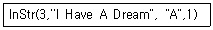
- 0
- 1
- 3
- 4
(정답률: 51%)
58. 다음 중 데이터베이스에서 인덱스를 사용하는 목적으로 가장 적절한 것은?
- 데이터 검색 및 정렬 작업 속도 향상
- 데이터의 추가, 수정, 삭제 속도 향상
- 데이터의 일관성 유지
- 최소 중복성 유지
(정답률: 73%)
59. 다음 중 폼이나 보고서에서 조건에 맞는 특정 컨트롤에만 서식을 적용하는 조건부 서식에 대한 설명으로 옳은 것은?(오피스 2007 기준 문제 입니다. 자세한 내용은 해설을 참고하세요.)
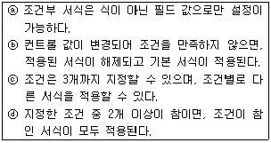
- ⓐ, ⓑ
- ⓑ, ⓒ
- ⓒ, ⓓ
- ⓐ, ⓓ
(정답률: 63%)
60. 다음 중 하위 폼에 대한 설명으로 옳지 않은 것은?
- 하위 폼에서 여러 개의 연결 필드를 지정할 때에 사용되는 구분자는 세미콜론(;)이다.
- 하위 폼은 단일 폼, 연속 폼, 데이터 시트 형태로 표시할 수 있으며, 기본 폼은 단일 폼 또는 연속 폼 형태로 표시할 수 있다.
- 기본 폼과 하위 폼을 연결할 필드의 데이터 형식은 같거나 호환되어야 한다.
- [하위 폼 필드 연결기]를 이용하여 간단히 기본 폼과 하위 폼의 연결 필드를 지정할 수 있다.
(정답률: 48%)